Total Solar Eclipse 2024 USA
Warning: Staring directly at the Sun (except the totality) without a solar filter is dangerous. Do not do that.
Place, time
April 8th, 2024. Observation point at Llano, Texas, USA. This is the town where the mayor advised residents to stock up on enough food for weeks, as the influx of tourists was expected to cause significant issues during the eclipse. I can't say I didn't meet some tourists, but we fit in quite comfortably.
{kind=link}
{kind=link}
{kind=link}
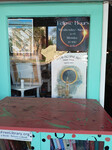
The GPS coordinates of the observation point: 30.750732 N, 98.693812 W.
A detailed map (created by Xavier M. Jubier) can be found here.
Equipment
Most of the pictures were taken using the following equipments:- Tripod: EQ-3. I used water bottles filled with water for counterweight. Not surprisingly, it was much more comfortable to use this mount (finding and tracking the Sun) than a regular camera tripod during the solar eclipse in Turkey. The disassembled tripod just fits my baggage (Actually I bought my baggage specially for this tripod).
- Telescope: SkyWatcher Maksutov-Cassegrain 102/1300
- Camera: Pentax K-70 (APS-C DSLR)
- I attached the telescope to the camera using a T2-K bayonet adapter (similar adapters are available for other camera brands as well), effectively shooting with a 1300mm F/12.7 telephoto lens. As expected, the Sun's image on the sensor is about 12mm. This is quite close to the size of the APS-C sensor (23.6 x 15.8 mm).
- Filter: Baader Astrosolar OD 3.8.
- I used a wired remote control ( JJC TM-PK1) to minimize camera shake.
- Spare battery for the camera. It is always advised to use brand new (or fully charged) batteries, and should always have replacement batteries.
{kind=link}
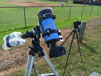
I used the android Eclipse Calculator 2 app to calculate contact times, which calculates the times based on the mobile phone's GPS signal. The program is a bit inconvenient, but despite all its flaws, it's a great help, especially if we don't know the exact observation point in advance.
Solar filter
Except for totality, a solar filter must always be used for solar photography. I used the filters I made for the 2016 eclipse as they were still in good condition. (It's an interesting question how many years these films can be used safely.)
The filters contain German Baader Astrosolar film, which I purchased from the manufacturer's site. I bought both OD (=Optical Density) 5.0 and OD 3.8 film, and finally photographed with the 3.8. OD 3.8 means that 1/103.8 (=1/6309) of the light passes through the film.
The filters were made using the method shown in a YouTube video:


I'd especially like to point out the very nice warning stickers! The easiest way to transport filters is in plastic kitchen containers.
Partial phase
{kind=link}
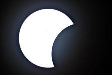
{kind=link}
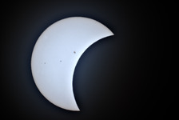
{kind=link}
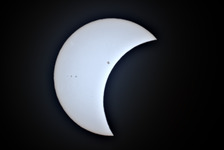
{kind=link}
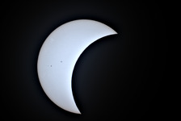
{kind=link}
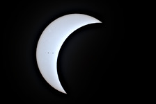
{kind=link}
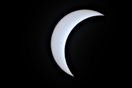
{kind=link}
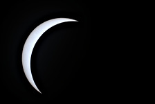
{kind=link}
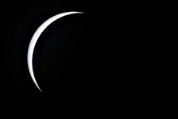
{kind=link}
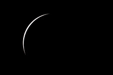
{kind=link}
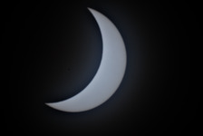
It's definitely worth using the OD 3.8 film instead of the OD 5.0 for photography.
Since the partial phase lasts quite a while, we can take many pictures, even with different exposure times. As the thickness of the clouds was constantly changing, the ideal setting was also constantly changing. Based on tests in Hungary, ISO 100, 1/1250 seemed the best setting, but in the end, most pictures were taken with ISO 200, 1/1250. The shutter speed was always 1/1250; I increased the ISO value if it was cloudier.
I managed to pay attention and finally didn't mount the camera too tilted on the telescope, meaning the Moon "bites" into the Sun in the images at the same angle as in reality.
The Sun leaves the field of view quite quickly, and the camera needs to be readjusted. With an astronomical telescope, this isn't too difficult, but due to the narrow size of the APS-C sensor, it was important to set up the camera so that the Sun's apparent motion was along the length of the sensor.
The color of the images is mostly influenced by which filter we use. During RAW processing, I set the color temperature so that the image of the Sun was white ( ufraw-batch --temperature=5500 --green=1.3 ).
During the partial phase after totality, the sky was very cloudy, so there is only one picture from this period here.
Totality, solar corona
During totality, the solar corona is visible in the pictures. With the APS-C sensor (and this telescope), the image is almost completely full, so the solar corona is less visible than in my previous full-frame (film) photos. Unfortunately, in quite a few pictures, the full part of the Sun is not even visible.
The equipment is the same as for the partial phase, but of course, no filter is used at this time.
Based on previous experience, I took an exposure series (from 1/6000 second to 1/8 second). (From this many pictures, some are bound to succeed). With even longer exposure times, the Sun would start to blur slightly.
I used bracketing on the camera, taking 5 shots with ⅓ EV difference with one button press. So if 1/4000 is set, the following pictures are taken: 1/6000, 1/5000, 1/4000, 1/3200, 1/2500. With this method, it's enough to take pictures with the following times: 1/4000, 1/1250, 1/400, 1/125, 1/40, 1/13, and thus we get 30 pictures between 1/6000 and 1/8.
Since there was plenty of time, I took two series, one with ISO 100 and one with ISO 800.
Even though I cleaned the sensor before photography, somehow at one point the sensor is just dirty.
At ISO 100, the solar corona didn't even burn in at 1/20, meaning the Sun's motion would have caused problems sooner than burning in. In exchange, however, at very short times, the image is almost completely black. The advantage of underexposure, however, is that the solar flares (the pink spots) are more visible. Images that basically seem almost completely black can be recovered with quite a lot of detail using ImageMagick (convert -contrast-stretch 60%x0.05%), but they are too noisy at short shutter speeds.
{kind=link}
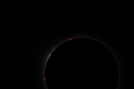
{kind=link}
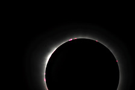
I also improved the images using my script based on ImageMagick, similar to Pellett's method.
{kind=link}
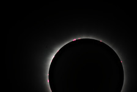
raw
{kind=link}
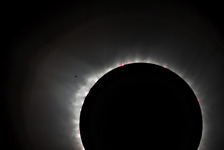
digitally enhanced
{kind=link}
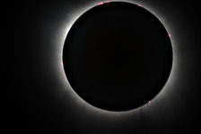
raw
{kind=link}
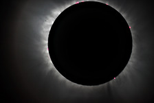
digitally enhanced
{kind=link}
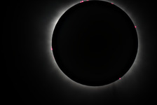
raw
{kind=link}
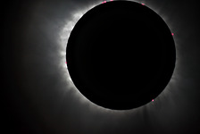
digitally enhanced
{kind=link}
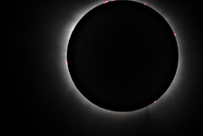
raw
{kind=link}
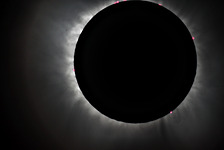
digitally enhanced
Baily's Beads
As the Moon covers more and more of the Sun, after a while the Sun only shines through the valleys of the Moon, at which point the sight resembles a momentarily changing string of beads.
{kind=link}
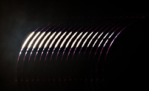
{kind=link}
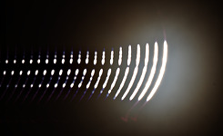
No filter is needed for these images either. My plan was to use ISO 100 at 1/1000 for the second contact and ISO 800 for the third contact, but I accidentally used ISO 100 in both cases. I shot a series in both cases. The 17 images of the second contact were taken in 4 seconds, and the 22 images of the third contact were taken in 9 seconds. In the images above, the series are, of course, digitally merged.
Although in theory the time of the second and third contacts can be calculated with second precision, it's not that easy to catch the moment. On a digital camera, of course, you can boldly take plenty of pictures; if the Sun doesn't crawl out of the frame, there won't be a problem. Another advantage of the series is that the rapid change of the image is very nicely visible.
It's strange that at the third contact it seems much more like I set the focus incorrectly, even though I didn't modify the settings between the second and third contacts. This is likely due to the clouds.
Multiple Exposure Sequence
{kind=link}
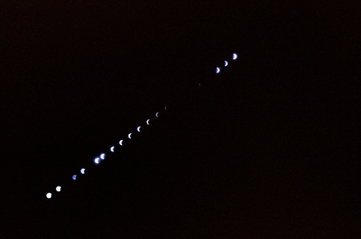
According to the plans, the partial phase's multiple images and totality are visible on the image at the same time. On the left side of the image, the process is visible as the Moon increasingly covers the Sun, in the middle is totality, and on the right is the process as the Sun increasingly becomes visible again. I didn't use any digital tricks to create the image; I exposed multiple images onto a single negative frame.
Equipment
We need a camera which supports multiple exposures (without advancing the film). I was using a Revue AC-5 camera (basically it is Chinon CP-7m) and a standard 50mm lens (SMC PENTAX-A 50mm f2)
ISO 100 film (Kodak Ektar 100). I chose ISO 100 instead of the previous ISO 400 film so I could use an F11 aperture instead of F22. 10 minutes passed between individual exposures. The camera must remain motionless between exposures, so of course, I used a tripod (a relatively light Manfrotto) and made sure that no one kicked the tripod during the creation of the image (approx. 2.5 hours).
The tripod and camera used for this image are visible on the right side of the image above showing the equipment.
Preparation
You can prepare quite well for photographing partial phases even without a solar eclipse. In addition to testing the filter, several things must be decided:
- Lens: It was considered to use an f1.4 lens instead of the f2 lens, but based on tests, they gave fairly similar results, so I stayed with the f2.
- Partial phase - aperture: With the OD 3.8 filter at ISO 100, F11 seemed the best choice.
- Partial phase - shutter speed: Since there's enough light, I chose 1/2000 as the shutter speed, which is the shortest time on the camera.
- requency of exposures: In 2006 I managed to create such a picture photographing every 15 minutes, in 2016 every 12 minutes, so now I tried with 10 minutes. (With the Revue AC-5, this can be set automatically using a remote control).
- Totality aperture and exposure time: Last time I chose F8 and 1/2 second, but the image blurred slightly. So now I chose F8 and 1/4, reducing the blur. Due to the ISO 100 film, there's enough light even so.
Of course the most important frame shows the totality, so we have to calculate the times relative to the time of the totality.
Remarks
- Similar images are often made so that the sky is brighter and the silhouette of some beautiful building or tree is visible in the foreground. There was nothing interesting nearby, and it's also difficult to compose one of these in a good place.
- Quite often such images are made digitally using multiple images. Obviously, it's easier to merge the image from multiple images, but it seemed more interesting to me to expose onto a single frame.
The reality
- Quite a few partial phase images are missing; the sky was simply too cloudy, especially after totality.
- The camera can take pictures nicely and automatically every 10 minutes, but there were times when the sky was cloudy just then, so I took the picture a few minutes later instead. On one hand, more partial phases are visible this way, but on the other hand, the images are less uniform.
- For two images, I took the pictures at 1/1000 instead of 1/2000 due to the clouds. On one hand, the Sun is brighter this way, but on the other hand, a blurry spot is visible around the Sun due to the clouds. It probably would have been better to stay at 1/2000.
- Again, I didn't manage to compose the image sequence in the middle; if the sky hadn't been very cloudy, the last images of the partial phases after totality would have crawled out of the frame. This composing seems like quite an easy task, but it almost always ends up being inaccurate.
- Keen observers might notice that totality is missing from the image. I either forgot to take off the filter in the rush, or I skipped switching to F8 1/4. 😞